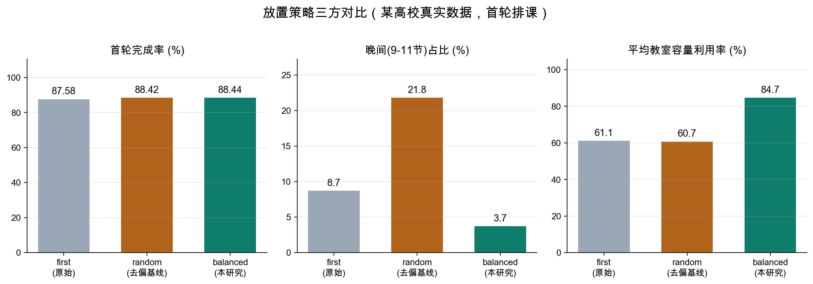
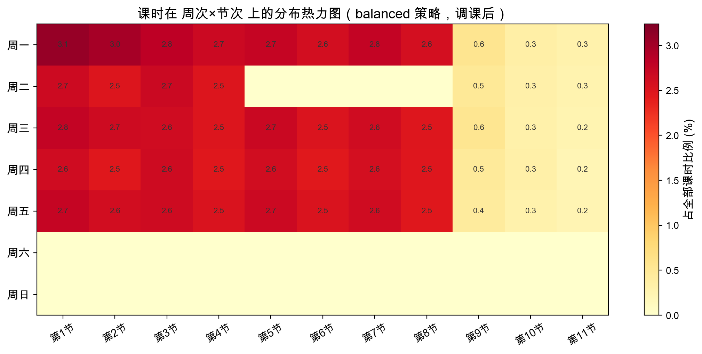
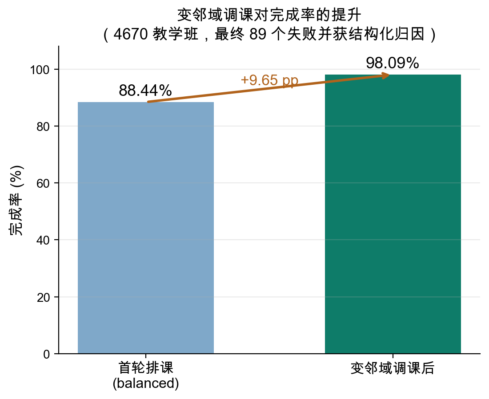

课程排课是高校教学管理的核心难题，其本质是在多重硬、软约束下对教室、教师、时间段等有限资源进行组合分配的优化问题，已被证明为 NP-hard 问题。传统方法在大规模、强约束的真实场景下难以兼顾求解效率与可行性；而排课需求多以自然语言形式表达，其结构化解析长期依赖人工干预，制约了系统的可用性与适应性。
本研究提出一种融合大语言模型（LLM）与启发式贪心算法的智能排课方法：利用 LLM 对自然语言需求进行结构化解析与可行性预检，通过课程语义聚类将大规模问题分解为低复杂度子问题，结合"最受约束优先"贪心策略与变邻域迭代调课生成可行方案，并引入 LLM 对失败课程进行约束冲突归因与建议生成，构建"排课—分析—反馈"闭环优化机制。本方法在自然语言理解、组合优化与可解释决策三者间实现协同，于大规模真实排课场景中兼具高自动化程度与强可解释性。本报告依次阐述选题依据、研究动态、研究内容，并从理论、框架完成度、已完成实验三个维度汇报阶段性进展。
课程排课本质是在多重硬、软约束下对有限资源进行组合分配的优化问题，已被证明为 NP-hard 问题[1,2]——随课程、班级、教室规模增大，精确求解时间呈指数级增长。以西安交通大学 4000 余教学班为例，相应整数规划模型将产生数万量级的变量与约束，难以在可接受时间内求得可行解。
理论层面，排课问题是计算复杂性理论、约束规划与多目标优化的经典检验平台；应用层面，其研究成果可将教务人员从繁重易错的手工排课中解放，把排课周期由数周压缩至小时级，并优化师资与教室资源配置，其底层逻辑亦可迁移至医护排班、考场编排、生产调度等同类问题。近年大语言模型在语义理解与推理能力上的显著提升，为破解"自然语言需求解析"这一长期瓶颈提供了新的技术路径，构成本课题的切入点。
二十余年来，求解大学课程时间表问题的方法可归纳为四类[3,4]：
运筹学方法（图着色 / 整数规划 / 约束满足） 元启发式（遗传 / 禁忌 / 退火 / 蚁群 / 粒子群 / 变邻域） 智能方法（混合 / 模糊 / 聚类） 多智能体方法
多数研究采用"构造—改进"两阶段框架。整数规划虽能提供最优性保证，但 Daskalaki 等[5]的实践表明其求解时间随规模急剧增长（92 门课程需 95 分钟），难以应对万级规模实例；Gaspero 与 Schaerf[6]提出的多邻域局部搜索，对本研究的调课邻域设计具有直接的参考价值。
研究者已开始探索大语言模型在调度问题中的三类角色：
研究空白与切入点：大语言模型已在语义解析、启发式设计与结果解释三方面各有进展，但将三者统一整合为完整排课流程的研究尚属空白。本课题将此三者贯通于一条"解析—优化—反馈"主线，构成核心创新。
总体目标是构建一种融合 LLM 语义理解能力与启发式贪心求解能力的智能排课方法，实现自然语言理解、组合优化与可解释决策的协同闭环。研究内容落实为如下五阶段流程，各模块迭代协作：
▲ 绿色为 LLM 增强环节，蓝色为优化求解环节，五阶段贯通为"排课—分析—反馈"闭环
相较现有工作，本方法的创新性体现在：(1) 以 LLM 统一处理需求解析与失败归因两端，贯通"语义—优化—解释"全链路；(2) 以语义聚类实现大规模问题的可控分解；(3) 在贪心放置环节引入近似最小约束值的求解策略，缓解资源分布偏倚。
本章从理论进展、框架完成度、已完成实验三个维度汇报阶段性成果。
问题形式化。设教学班集合 $C$，教学日集合 $D$，每日时段集合 $P$，教学周集合 $W$，教室集合 $R$，教师集合 $T$，班级集合 $B$。每个教学班 $c$ 关联教师集合 $T_c$、班级集合 $B_c$、周学时 $z_c$、容量需求 $q_c$、偏好时间 $\Phi_c$ 与避免时间 $\Psi_c$，且教师 $t$ 仅在其指定子周集合 $W_t$ 授课。排课即求映射
其中三元组 $(d,s,h)$ 表示一段连续上课（星期 $d$、起始节 $s$、连续节数 $h$），满足 $s+h-1\le|P|$。硬约束 $\mathcal{H}$ 要求任意 $(w,d,p)\in W\times D\times P$ 处教室、教师、班级三类资源均唯一占用；软约束 $\mathcal{S}$ 涵盖时段偏好、教学楼/校区偏好、教室类型匹配与历史教室倾向。整体优化目标以最大化排课完成率为首要、软约束累计满足度为次要，按字典序定义：
其中 $s_k(c)$ 为第 $k$ 项软约束的满足度评分，$\lambda_k$ 为权重系数。
核心环节一：最受约束优先（MCF）贪心。对待排教学班 $c$，定义其在教室 $r$ 下的可行方案数与总资源量：
$\Pi(c)$ 为满足周学时 $z_c$ 且避开禁用时段 $\Psi_c$ 的上课天模式集合；$\Theta(\cdot)$ 返回同时通过教室、教师、班级、时间偏好四类冲突检查的可行时段；$R(c)$ 为通过容量、校区、教室类型与教学楼筛选的合适教室集合。
每轮选取资源最紧张的教学班优先安排，以避免后期资源耗尽：
核心环节二：求解策略（值排序）。确定 $c^\ast$ 后，须在其可行候选集 $A(c^\ast)=\{(r,a)\}$ 中选定具体教室与时段。原始策略取"可行方案数最多教室的首个可行时段"，属朴素 first-fit，会使课程系统性聚集于周初早间、并令大容量教室被小班课程占用。本研究将其视为约束满足中的值排序问题，引入近似最小约束值（Least-Constraining Value, LCV）的负载均衡放置策略：
$\rho(a)$ 为方案 $a$ 所占时段在全体可排教室、教学周上的平均占用率（为后续课程保留紧俏时段）；$\omega(r,c)=(\mathrm{cap}_r-q_c)/\mathrm{cap}_r$ 为教室容量浪费率（容量最优匹配，best-fit）；$\varepsilon(a)$ 为晚间节次占比（作息友好先验）。三项均为软导向，不破坏可行性。该策略的实验对比见 §4.3。
核心环节三：变邻域调课与 LLM 归因。对首轮失败集合按轮次迭代收缩 $F_0\supseteq F_1\supseteq\cdots\supseteq F_K$，逐步放松软约束并对已排课程进行局部重调度；对最终残余失败集合 $F_K$，结合排课日志 $\mathcal{L}$（冲突资源类型、冲突教学班、剩余可用时段）由 LLM 生成解释与建议：
由此闭合"归因—调整—重排"回路。
系统已实现完整流水线，六个核心模块的实现情况如下表所示。其中自然语言需求解析的 LLM 版本已完成，端到端流程与可视化模块为本阶段在中期框架上的补充与强化。
| 模块 | 状态 | 实现情况 |
|---|---|---|
| ① 自然语言 需求解析 | 已完成 （规则 + LLM） |
规则版可将"周三下午""避免周二 5–8 节"等自由格式偏好转为结构化时间窗；LLM 版已完成，对更复杂、隐含的自然语言需求实现语义级解析与结构化抽取。 |
| ② 语义嵌入 聚类分批 | 已完成 | 采用国产开源嵌入模型对课程向量化，将数千门课程聚为约束相近的子批，已与贪心引擎完整耦合，显著降低单次搜索复杂度。 |
| ③ 贪心排课 与求解策略 | 已完成 | 系统调度核心，将硬约束与软约束统一纳入决策，以"最受约束优先"分批迭代排课；求解策略（§4.1）已实现并可配置切换。 |
| ④ 变邻域 迭代调课 | 已完成 | 对首轮失败课程逐步放松软约束、局部重调度，以二至三轮迭代持续提升整体完成率。 |
| ⑤ LLM 失败 归因与反馈 | 规则版完成 LLM 版完善中 |
规则版已能结构化分析排课日志中的拒绝类型与资源占用并输出归因；LLM 版正在完善，以生成自然语言原因解释与可操作调整建议。 |
| ⑥ 端到端流程 与可视化 | 已完成 | 串联各模块构成完整调度流程，支持聚类批次管理、中间状态持久化与断点续算，配套教室/教师/班级利用率等多维可视化与自动分析报告。 |
整体性能。系统已在两套真实高校数据上完成端到端实验。西安交通大学 4000 余教学班经贪心与变邻域调课后完成率达 99.1%，剩余 36 个失败案例均获结构化归因；另一所高校近 5000 教学班首轮完成率 87.7%、调课后提升至 98.1%，最终 87 个失败教学班被归为"主讲教师信息缺失、无满足条件教室资源、教师时间窗已占满"三类。两套数据均验证了系统的稳定性、跨院校适用性与时间高效性。
求解策略对比实验。为验证 §4.1 所提放置策略的有效性，在某高校真实数据上对三种策略各执行一次首轮排课（同一随机种子，未含调课）：first 为原始 first-fit 基线，random 为消除偏倚的 GRASP 式随机化基线，balanced 为本研究所提的负载均衡放置策略。
| 评价指标 | first（原始） | random（去偏基线） | balanced（本研究） |
|---|---|---|---|
| 首轮排课完成率 | 87.58% | 88.42% | 88.44% |
| 晚间（9–11 节）课时占比 | 8.7% | 21.8% | 3.7% |
| 平均教室容量利用率 | 61.1% | 60.7% | 84.7% |
| 周一 / 周五 课时占比 | 33.3% / 8.3% | 23.4% / 20.7% | 22.5% / 21.8% |
实验结论：原始策略下周一课时为周五的约 4 倍，时段分布偏倚显著。随机化与负载均衡策略均消除了该偏倚，且完成率较原始策略提升约 0.9 个百分点；然而随机化以晚间课时占比由 8.7% 升至 21.8% 为代价（"均匀分布并非最优分布"）。本研究所提负载均衡策略在取得同等完成率与时段均衡的同时，将晚间课时占比降至 3.7%、教室容量利用率由 61% 提升至 85%，在可行性、资源适配与作息友好三方面均优，验证了求解策略设计的有效性。
可视化结果。下图基于该高校真实数据的实际排课产物绘制，直观印证上述结论。图 1 对比三种放置策略的关键指标；图 2 为 balanced 策略调课后课时在"周次×节次"上的分布热力图，可见周一至周五分布均衡（无周初早间堆积）、晚间 9–11 节占用极低（≤0.6%）、周末基本空闲，符合高校作息；图 3 为本次基于 balanced 首轮结果运行变邻域调课的完成率提升。



将 LLM 合理性检查与失败归因模块由规则版升级为语义推理版，提升对多样表述、隐性矛盾与多重耦合冲突的覆盖能力与解释可读性。
构建排课需求训练数据（真实需求与合成增强），对比提示工程与 LoRA 微调在解析准确率上的差异。
设置五组消融变体（w/o LLM-Parse、Consistency、Embedding、MCF、LLM-Diag），在小型 ITC-2007、中型 ITC-2019 与大型真实数据上，从可行性、质量、效率、可解释性四维度量化各组件贡献；放置策略对比纳入 MCF 相关分析。
接入 ITC 标准基准数据集以论证方法普适性；参照 TRACE-cs 的人工评估范式，从正确性、可操作性、简洁性三维评价失败原因解释的质量。
汇总实验结论，明确方法创新点与作用边界，完成学位论文撰写、修改与答辩。
注：整体完成率数据引自两套真实高校数据集的端到端实验；求解策略对比数据来自某高校真实数据的首轮排课实验。文中公式由本地 MathJax（SVG 输出）离线渲染，无需联网。